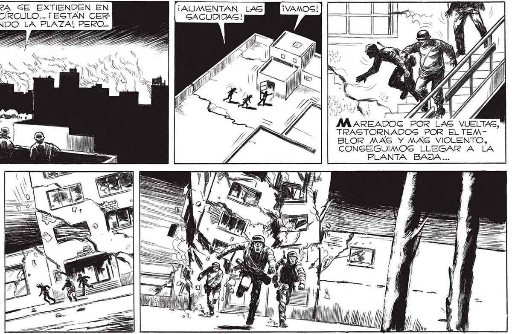

196 ¡OTRA vez Milo HABAMOS OLVIDADO! 23 ANIELEN CON PREFENCIA SON LOS MAS ERAN LLAMAS AZULADAS, PALIDAS.PERO EN FRACCIONES DE SEGUNDO ENROJECIERON, COBRARON VIDA, CRECIERON... | 8 e) $ M N ' mr” | SS AQ CCAA YESO DEL CIELORRACGO. VI ABRIRSE UNA GRIETA, COMO UNA ENORME BOCA. 2 ¡LOG EDIFICIOG QUE DE- | AHORA SE EXTIENDEN EN SEMICÍRCULO... ¡ESTÁN CER CANDO LA PLAZA! PERO... POR UN INSTANTE EL PA NICO ME AGARROTO, Y TUVE DELANTE LAS TREMENDAS HUELLAS DE AQUELLOS SEREG CAPACEG DE HUNDIR EL PAVIMENTO... Y DE ABATIR DE UN EMPUJON GRANDES EDIFICIOS. COMO AQUEL EN CUYA AZOTEA ESTABAMOS... Gú VAMOS... ¡PERO ANTES ¡[ESCAPEMOS! ¡TIRARÁN EL EDIFICIO ABAJO! ¡AUMENTAN LAS GACUDIDAG! Tm ACABAN DE ENCENDERSGE...EN DISTINTOS LUGARES A LA VEZ... == === » Y MAREADOG POR LAS VUELTAS," TRASTORNADOSGS POR EL TEMBLOR MAS Y MAS VIOLENTO, CONSEGUIMOS LLEGAR A LA PLANTA BAJA...
